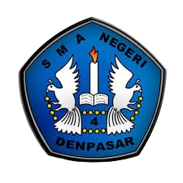

Selamat datang di SMAN 4 Denpasar. Kami berkomitmen untuk membentuk siswa yang unggul dalam prestasi, berakhlak mulia, dan siap menghadapi tantangan masa depan dengan semangat belajar yang tinggi serta kolaborasi antara sekolah, keluarga, dan masyarakat.
Menghasilkan sumber daya manusia yang cerdas spiritual, cerdas intelektual, cerdas emosional, berbasis budaya dan lingkungan.